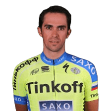

Estos son els nostres elegits:
Miguel Induráin va guanyar 5 Tour de França y 2 Giro de Italia. Luis Ocaña és el ciclista que mes ha fet sufrir en montanya al major ciclista de la historia, Eddy Merckx. Alejandro Valverde és uns dels millors, Óscar Freire, Alberto Contador, Federico Martín Bahamontes, Perico Delgado, Roberto Heras.
